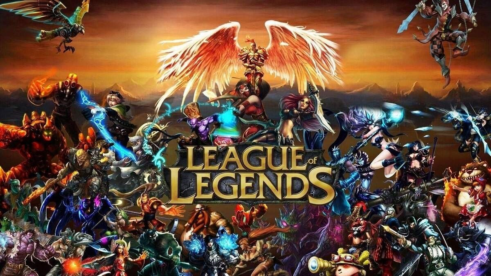

Videohry - MOBA

Dota 2 je komplexní týmová strategická hra typu MOBA, ve které proti sobě stojí dva pětičlenné týmy snažící se zničit hlavní budovu soupeře zvanou Ancient. Každý hráč si vybírá z desítek unikátních hrdinů s různými schopnostmi a rolemi, přičemž klíčem k vítězství je spolupráce, taktika a správné načasování. Hra nabízí hluboký herní systém, pravidelné aktualizace a také profesionální scénu s prestižním turnajem The International, kde se hraje o milionové prize pooly.

League of Legends je populární online týmová hra typu MOBA, kterou vyvinula společnost Riot Games. V této hře proti sobě stojí dva týmy po pěti hráčích, kteří ovládají unikátní šampiony s různými schopnostmi a rolemi. Cílem je zničit nepřátelskou základnu, přičemž klíčem k úspěchu je spolupráce, strategie a rychlé rozhodování. Díky pravidelným aktualizacím, rozmanitým herním režimům a silné esportové scéně si hra udržuje miliony aktivních hráčů po celém světě.